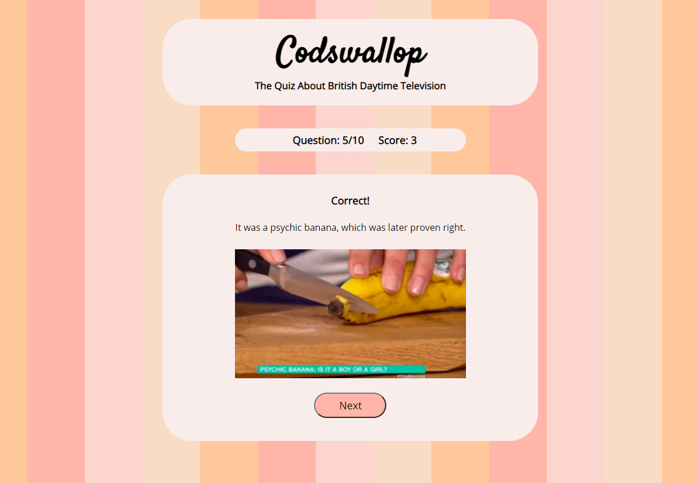
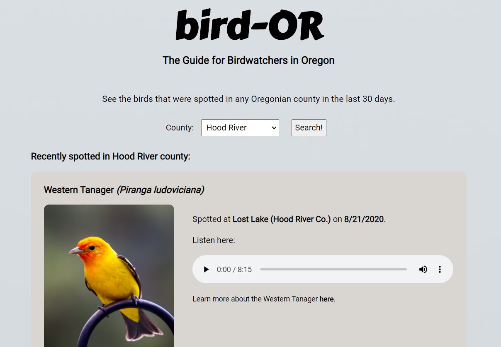

Hello!
I'm a software developer currently living in Portland, OR. I have a background in music, sound design, and database administration, all of which have paved the way for my dream career as a developer.
I'm a junior full-stack developer who particularly loves working with backend technologies. I really enjoy being able to draw on my database admin experience and apply it in a different space! I'm also passionate about developing technology for wildlife and environmental conservation.
About Me
I was first exposed to software development during my undergraduate degree studying music composition. I always adopted a mathematical approach to writing compositions, and when I learned how to use visual programming languages (e.g. Max/MSP) to write algorithmic compositions, I was hooked! It prompted me to pursue my MSc. in Sound Design, where I was able to continue composing computer music and working with new technologies.
The overarching theme of my academic and professional career is problem-solving. I've realized that I find joy in problem-solving, whether it's searching for the perfect chord progression or fixing a bug. I feel really lucky that web development allows me to collaborate with others, be creative, and be a full-time problem-solver.
I'm originally from Somerset, a county in south-west England known for cheddar cheese and excellent accents. In my free time, I enjoy reading, playing video games, recording birdsong, and trying desperately not to kill the plants in my garden.

Portfolio
Codswallop
- Codswallop is an interactive quiz app testing the user's knowledge of British daytime television.
- The app checks the user's answers, provides feedback, and keeps a running score.
- Built using HTML, CSS, JavaScript, and jQuery.
- View the GitHub repo.
- View the app.
bird-OR
- bird-OR is an application for birdwatchers located in Oregon. The user can search any county in Oregon and see birds that have been spotted there over the last 30 days.
- bird-OR is designed for novice birdwatchers who want to know what to look and listen for when they go birdwatching.
- Built using HTML, CSS, JavaScript, and jQuery. The app pulls data from the following APIs: e-bird, Flickr, and freesound.
- View the GitHub repo.
- View the app.
Third Project [Placeholder Content]

- Description that explains what the app does.
- Who the app is for, why it was built.
- Skills used (what is the stack).
- Placeholder link to the GitHub repo of the project.
- Placeholder link to live, working app.
Fourth Project [Placeholder Content]
- Description that explains what the app does.
- Who the app is for, why it was built.
- Skills used (what is the stack).
- Placeholder link to the GitHub repo of the project.
- Placeholder link to live, working app.